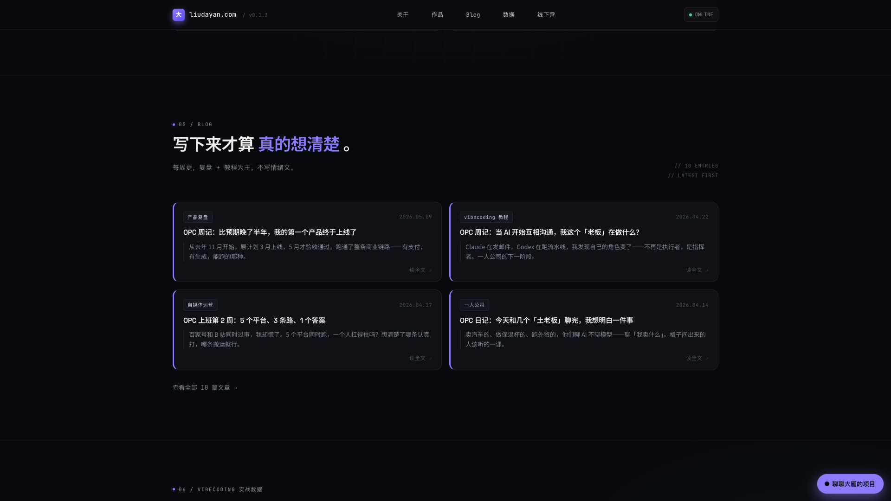

<template id="beat-4-proof-template">
  <div id="beat-4-proof" data-composition-id="beat-4-proof" data-width="1920" data-height="1080">
    <div class="scene scene-proof">
      <div class="bg-grid"></div>
      <div class="bg-shot">
        
      </div>
      <div class="scene-content">
        <div class="eyebrow t-mono">PROOF / BLOG + DATA</div>
        <h2 class="headline">写下来，<span>也公开出来。</span></h2>
      </div>
      <div class="blog blog-a">
        <div class="tag">产品复盘</div>
        <div class="title">第一个产品终于上线了</div>
        <div class="excerpt">有支付，有生成，整条商业链路跑通。</div>
      </div>
      <div class="blog blog-b">
        <div class="tag">vibecoding 教程</div>
        <div class="title">当 AI 开始互相沟通</div>
        <div class="excerpt">角色从执行者变成了指挥者。</div>
      </div>
      <div class="metric-row">
        <div class="metric">
          <div class="label t-mono">抖音粉丝</div>
          <div class="value">4.5万+</div>
        </div>
        <div class="metric">
          <div class="label t-mono">小红书粉丝</div>
          <div class="value">2646</div>
        </div>
        <div class="metric">
          <div class="label t-mono">视频号粉丝</div>
          <div class="value">2019</div>
        </div>
      </div>
    </div>
    <style>
      #beat-4-proof {
        width: 100%;
        height: 100%;
        overflow: hidden;
        color: #ededee;
        background: #08090c;
        font-family: "PingFang SC", "Noto Sans SC", sans-serif;
      }
      .scene {
        position: relative;
        width: 100%;
        height: 100%;
        overflow: hidden;
        background:
          radial-gradient(circle at 28% 12%, rgba(139,124,255,0.18), transparent 22%),
          #08090c;
      }
      .bg-grid {
        position: absolute;
        inset: 0;
        background-image:
          linear-gradient(to right, rgba(255,255,255,0.05) 1px, transparent 1px),
          linear-gradient(to bottom, rgba(255,255,255,0.05) 1px, transparent 1px);
        background-size: 64px 64px;
        opacity: 0.22;
      }
      .bg-shot {
        position: absolute;
        inset: 0;
        opacity: 0.18;
      }
      .bg-shot img {
        width: 100%;
        height: 100%;
        object-fit: cover;
        object-position: center 8%;
      }
      .scene-content {
        position: absolute;
        left: 140px;
        top: 110px;
      }
      .t-mono {
        font-family: "JetBrains Mono", "SF Mono", monospace;
        letter-spacing: 0.14em;
      }
      .eyebrow {
        font-size: 16px;
        color: #c8bfff;
        margin-bottom: 18px;
      }
      .headline {
        margin: 0;
        font-size: 82px;
        line-height: 1;
        font-weight: 700;
      }
      .headline span {
        color: #8b7cff;
      }
      .blog {
        position: absolute;
        width: 600px;
        padding: 30px 34px;
        border-radius: 26px;
        border: 1px solid rgba(255,255,255,0.12);
        background: rgba(15,17,22,0.9);
      }
      .blog-a {
        left: 140px;
        top: 360px;
      }
      .blog-b {
        right: 140px;
        top: 360px;
      }
      .tag {
        display: inline-block;
        margin-bottom: 20px;
        padding: 8px 12px;
        border-radius: 12px;
        border: 1px solid rgba(255,255,255,0.08);
        font-size: 14px;
        color: #b8babf;
      }
      .title {
        font-size: 38px;
        line-height: 1.2;
        font-weight: 700;
        margin-bottom: 14px;
      }
      .excerpt {
        font-size: 22px;
        line-height: 1.5;
        color: #b8babf;
      }
      .metric-row {
        position: absolute;
        left: 140px;
        right: 140px;
        bottom: 110px;
        display: flex;
        gap: 22px;
      }
      .metric {
        flex: 1;
        padding: 24px 28px;
        border-radius: 22px;
        border: 1px solid rgba(255,255,255,0.1);
        background: rgba(15,17,22,0.82);
      }
      .label {
        font-size: 14px;
        color: #7c7f8a;
        margin-bottom: 14px;
      }
      .value {
        font-size: 54px;
        font-weight: 700;
        color: #ededee;
      }
    </style>
    <script src="https://cdn.jsdelivr.net/npm/gsap@3.14.2/dist/gsap.min.js"></script>
    <script>
      window.__timelines = window.__timelines || {};
      const tl = gsap.timeline({ paused: true });
      tl.from(".eyebrow", { y: 18, opacity: 0, duration: 0.42, ease: "power2.out" }, 0.05);
      tl.from(".headline", { y: 36, opacity: 0, duration: 0.7, ease: "power3.out" }, 0.1);
      tl.from(".blog-a", { x: -60, opacity: 0, duration: 0.65, ease: "power3.out" }, 0.45);
      tl.from(".blog-b", { x: 60, opacity: 0, duration: 0.65, ease: "power3.out" }, 0.58);
      tl.from(".metric", { y: 34, opacity: 0, duration: 0.52, ease: "power2.out", stagger: 0.12 }, 0.86);
      tl.to(".bg-shot", { y: -16, duration: 4.8, ease: "none" }, 0);
      window.__timelines["beat-4-proof"] = tl;
    </script>
  </div>
</template>
